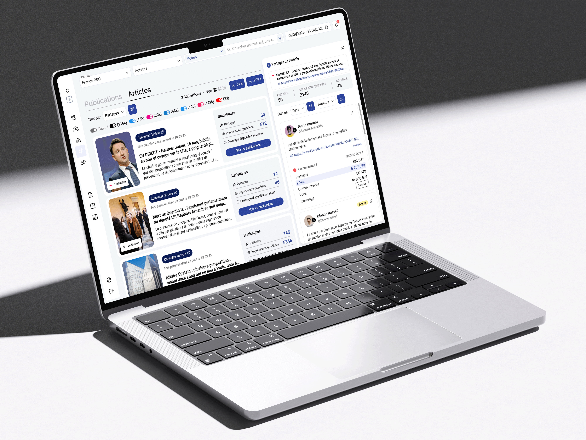
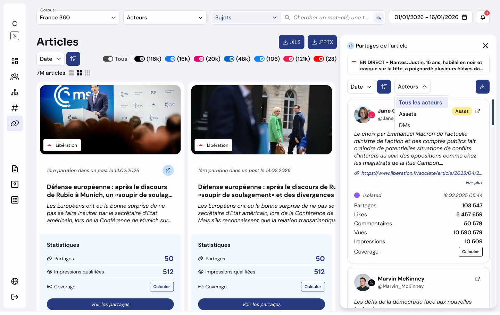
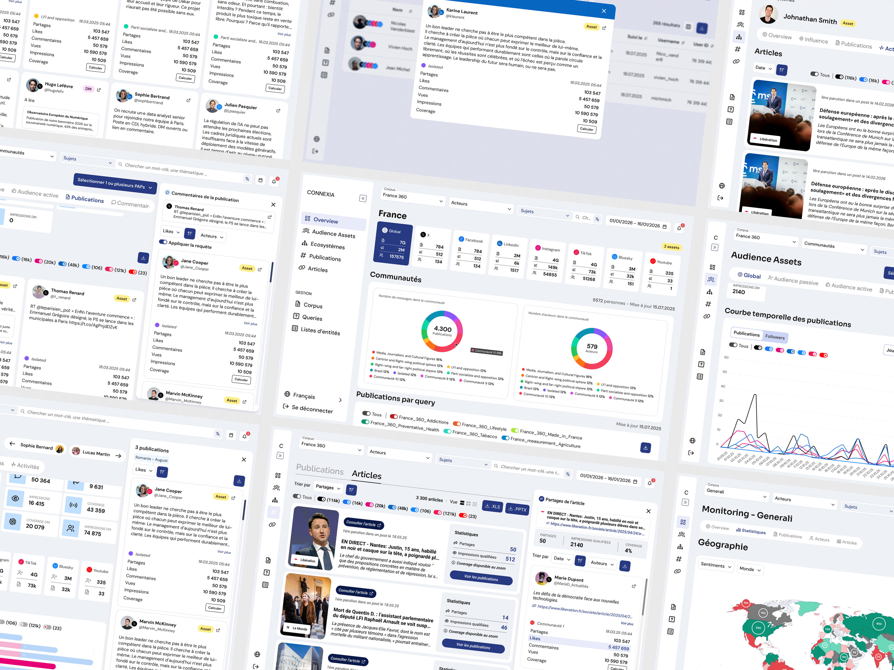
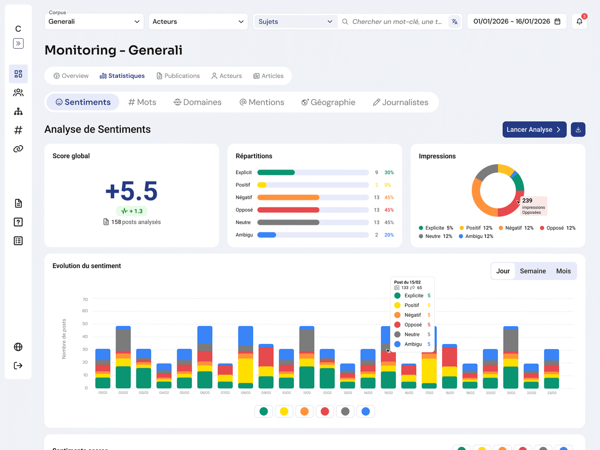
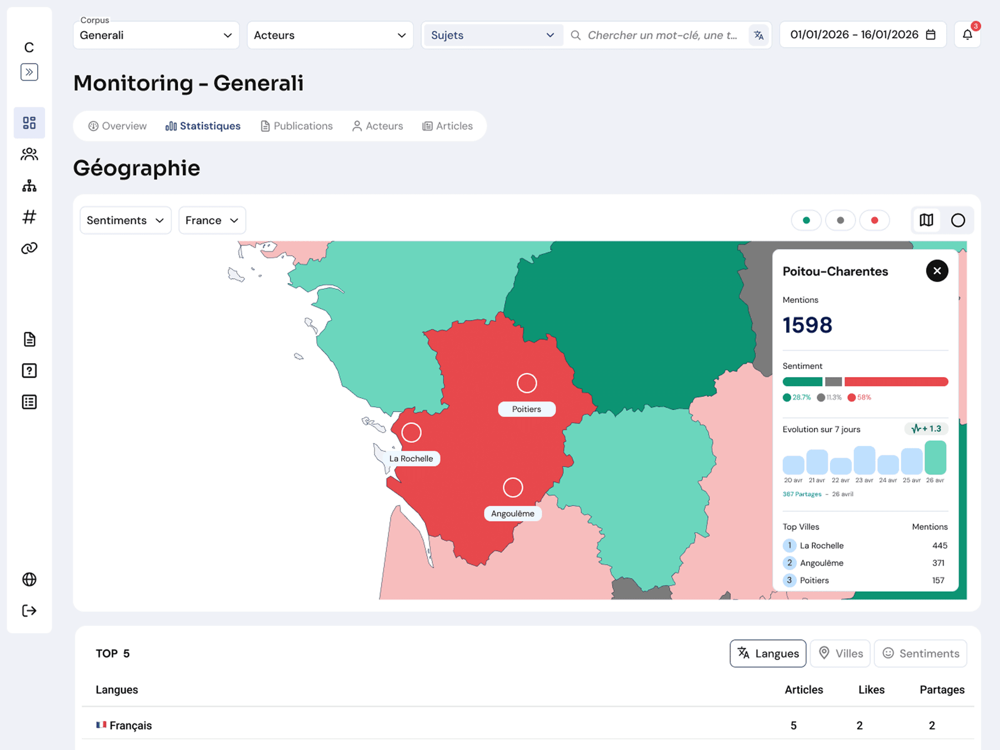

Connexia — Faire évoluer un produit par l'usage

Comment apporter une solution créative sans casser ce qui fonctionne déjà ? Rejoindre un projet SaaS en cours de route demande de comprendre d'abord la logique du système en place. Pour Connexia, mon rôle a été de relier les besoins utilisateurs, les attentes produit et les contraintes techniques — pour concevoir des interfaces minimalistes, parfaitement intégrées au produit.
Le Contexte
Connexia est une application SaaS structurée nécessitant l'intégration de nouvelles fonctionnalités et la refonte progressive de certains composants. Le produit possède déjà sa propre base d'utilisateurs et ses logiques de navigation.
Mon Rôle
UX/UI Designer, intégré directement au sein de l'équipe produit et en binôme avec les développeurs. Référent design sur les nouvelles fonctionnalités, du cadrage à la livraison pixel-perfect.
Les Contraintes
- Héritage (Legacy) — Travailler avec un Design System existant, à respecter et faire évoluer en douceur.
- Faisabilité technique — Proposer des solutions réalisables dans les sprints prévus.
- Ergonomie — Résoudre des scénarios multi-facettes sans surcharger l'interface.
L'Approche
- L'immersion — Capter le besoin réel derrière chaque demande métier.
- L'adaptation — Utiliser et enrichir le Design System existant sans rupture.
- Le minimalisme — Simplification extrême pour supprimer toute friction inutile.
Le Résultat
Livraison de solutions UI/UX testées, transition fluide pour l'utilisateur final et collaboration constructive avec l'équipe de développement grâce à une compréhension mutuelle des contraintes.



